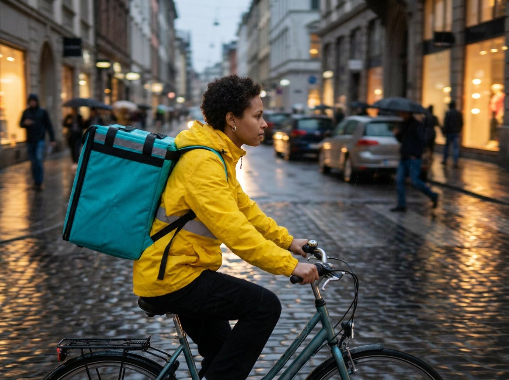
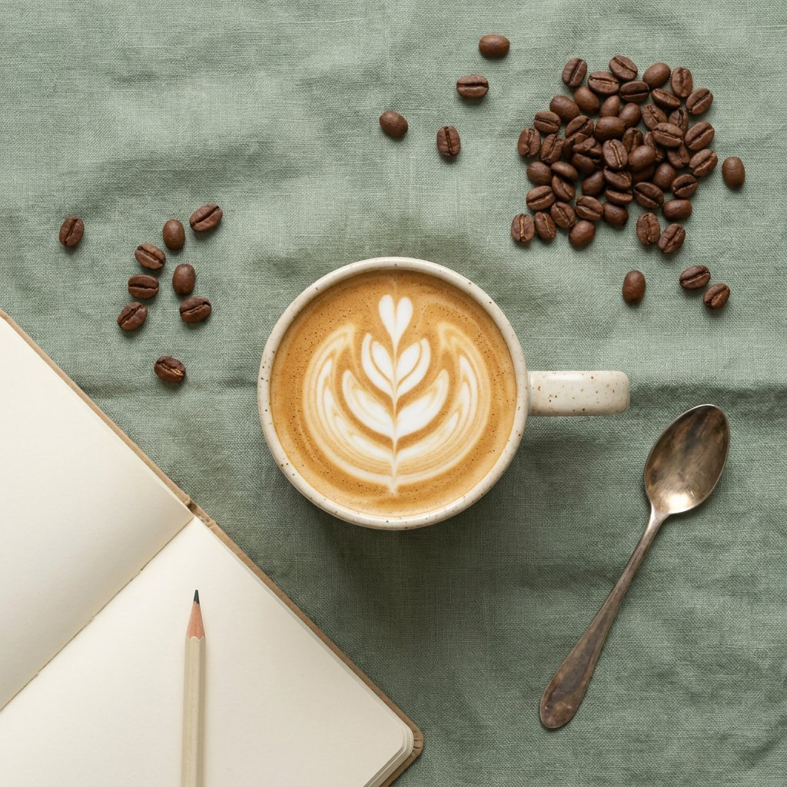
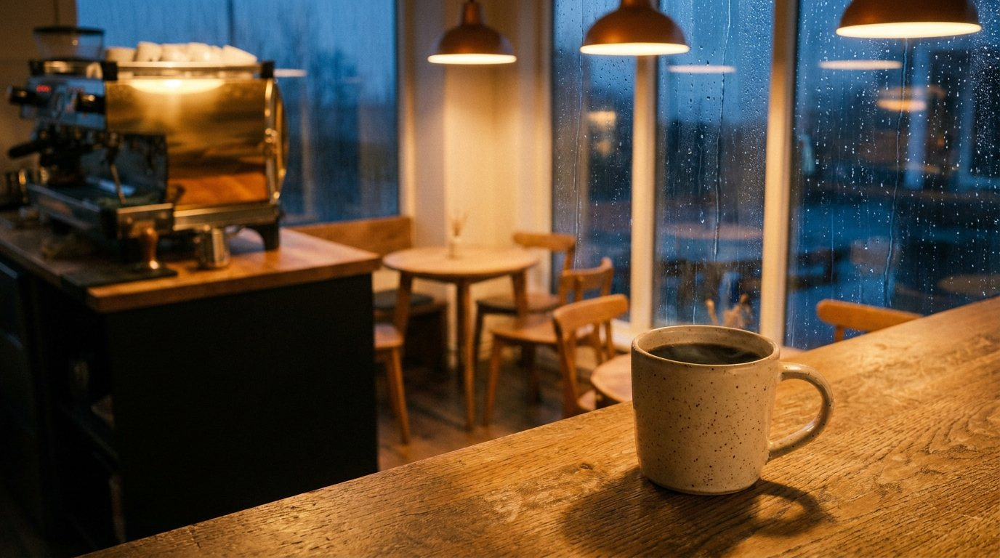
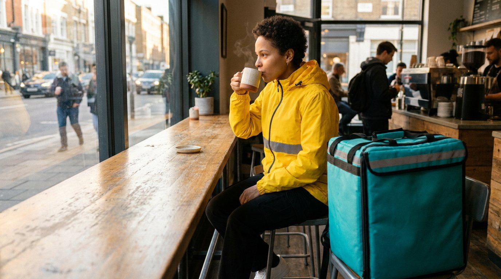
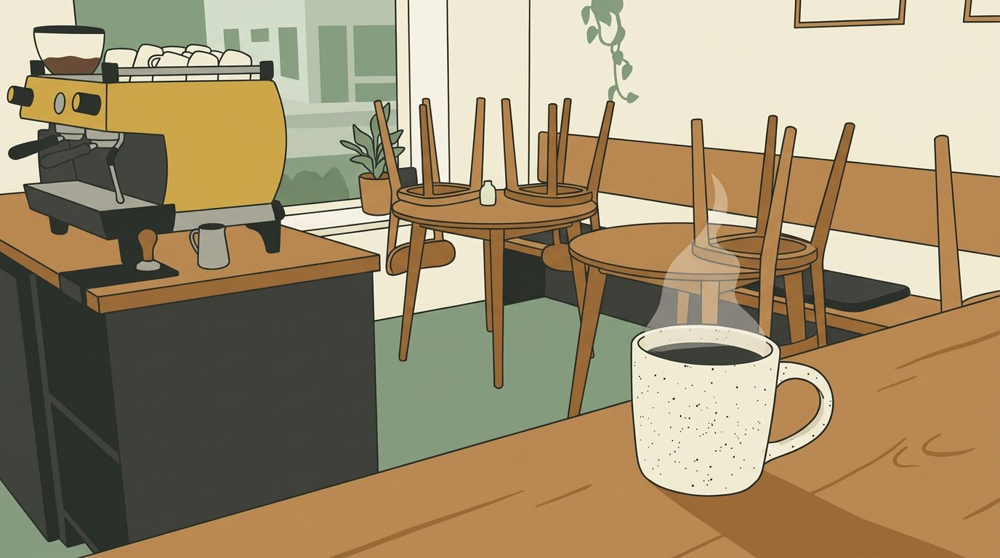
GenAI Basics • Урок 04 • Модуль 2: мультимодальность
Генерация изображений
Сервисы, промпт-техники и паттерны контроля
ChatGPT, Nano Banana, Leonardo.ai, Midjourney, Kling и FLUX. От интерактивного хука и устройства рынка — к фотосессии товара, правкам по инструкции и персонажу, который узнаваем в каждом кадре.
← → листать • N заметки спикера • G все слайды • F полный экран
Приветствие. Открываем Модуль 2 — мультимодальность. Сегодня не абстрактный арт, а инженерное ремесло: как модели рисуют, кто стоит за генерацией, зачем нужны креативные студии вроде Leonardo, как писать промпты со слотами и как удерживать консистентность объектов.
Интерактивный хук • Разминка
Угадайте: кто реальный человек, а кто — ИИ?
Шесть портретов. Напишите в чат буквы тех, кого вы считаете настоящей фотографией, и тех, кто сгенерирован нейросетью.
[ A ]
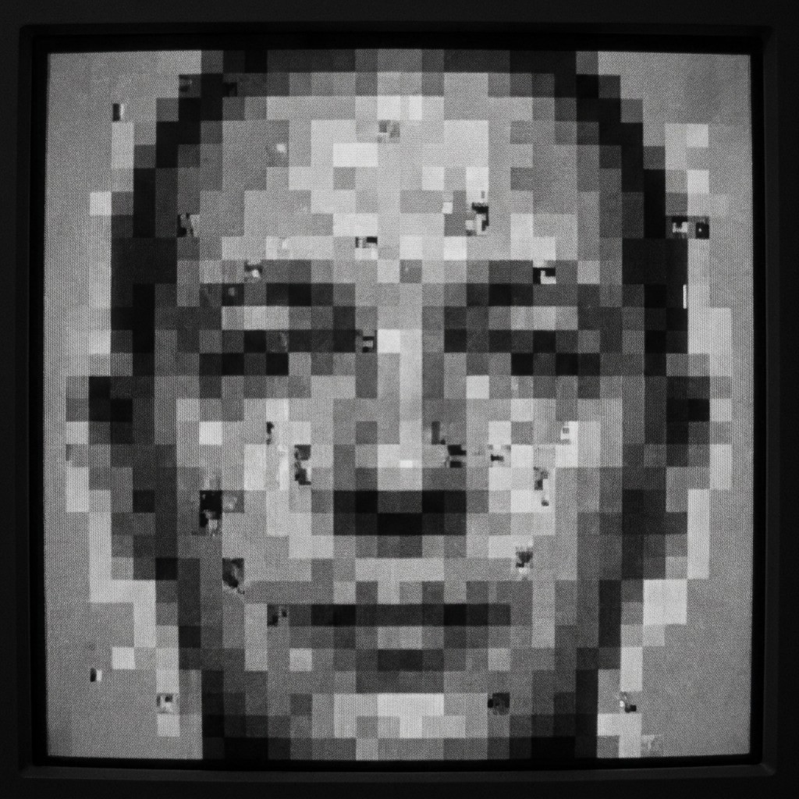
Портрет А
[ B ]
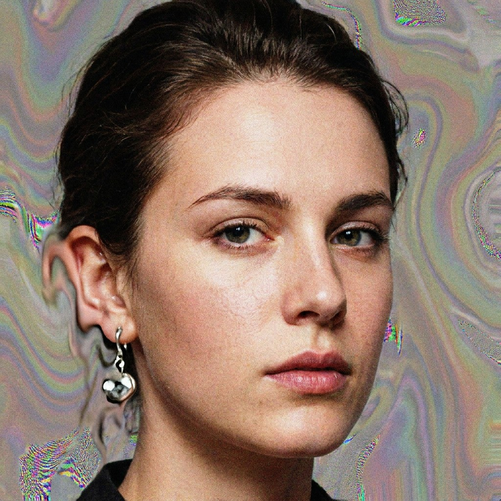
Портрет B
[ C ]
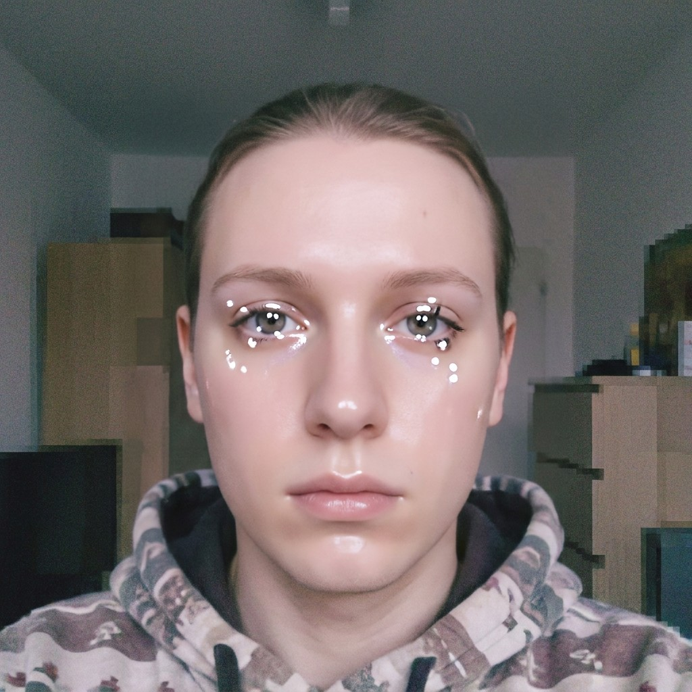
Портрет C
[ D ]
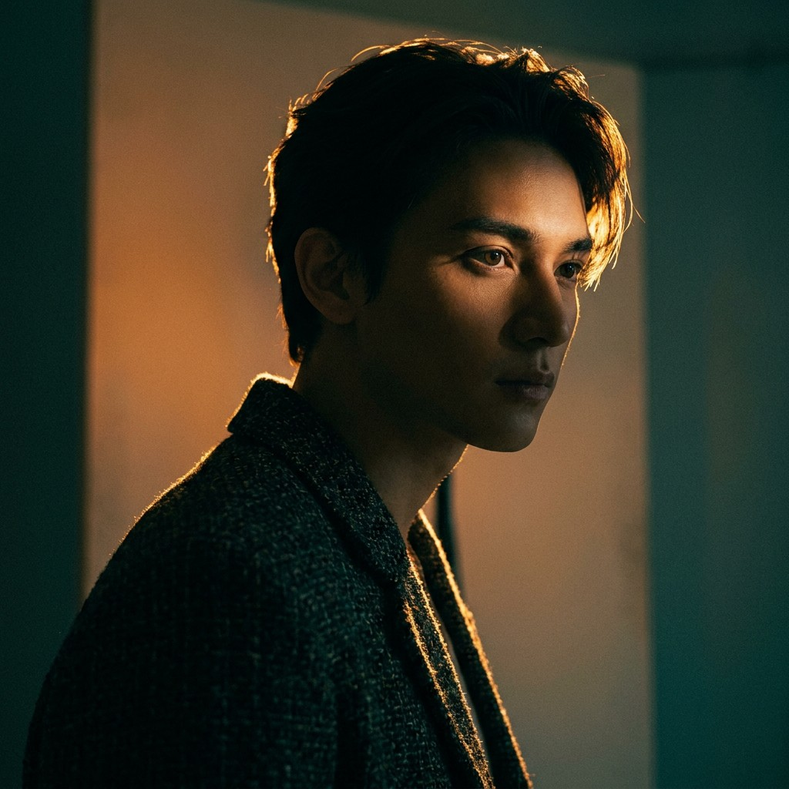
Портрет D
[ E ]
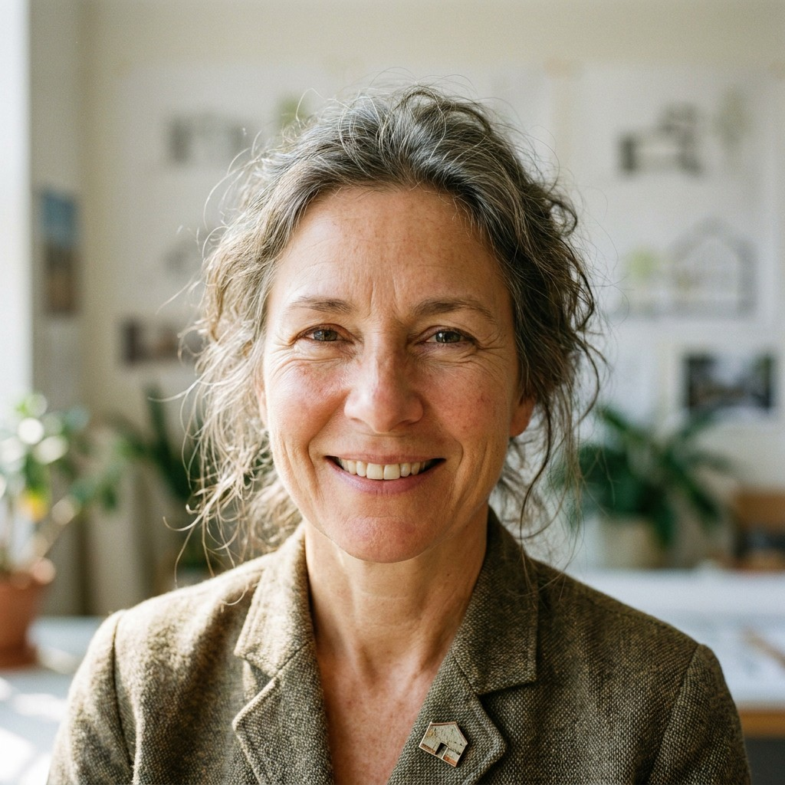
Портрет E
[ F ]
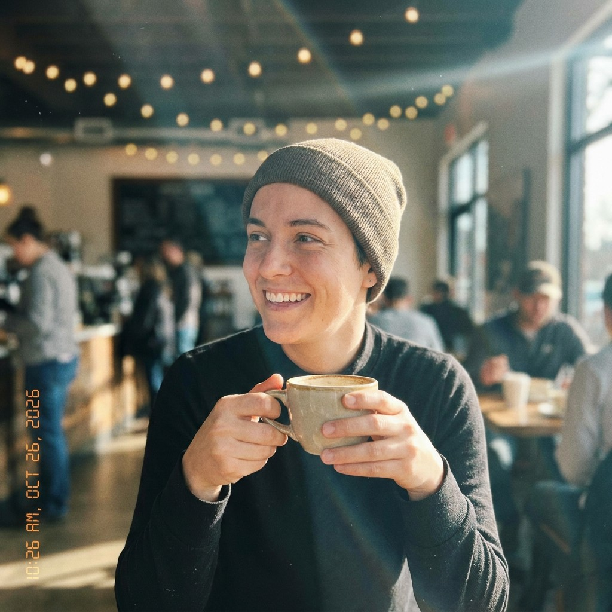
Портрет F
Вопрос в чат: напишите ваши догадки. Например: «A и B — нейросеть, E и F — настоящие люди» или «Только F реальный». На что вы обращаете внимание?
GenAI Basics • Урок 04 • Генерация изображений02 / 27
Даем залу 30–45 секунд. Спрашиваем: на что смотрите? Обычно цепляются за уши (B), за «пластиковую» кожу (C), за идеальный свет (D), за морщинки (E) и таймстемп смартфона (F). Переходим к следующему слайду с разоблачением.
Раскрытие интриги • 2014–2025
Все 6 — это генерация ИИ. Десятилетие эволюции
Ни одной реальной фотографии. Реконструкция стиля каждой эпохи (все кадры сгенерированы в 2026): как генеративные модели прошли «зловещую долину».
2014GAN
Goodfellow GAN
64×64 px, серые пятна шума. Рождение технологии.
64×64 px, серые пятна шума. Рождение технологии.
2018StyleGAN
NVIDIA StyleGAN
Иллюзия реализма, но плавятся серьги, уши и фон.
Иллюзия реализма, но плавятся серьги, уши и фон.
2022SD 1.5
Stable Diffusion
Диффузия в опенсорсе. Гламурный глянец, неживые глаза.
Диффузия в опенсорсе. Гламурный глянец, неживые глаза.
2023MJ v5
Midjourney v5
Победа эстетики. Киношный контраст, теплый контурный свет.
Победа эстетики. Киношный контраст, теплый контурный свет.
2024FLUX.1
FLUX.1 Dev/Pro
Микротекстура кожи, поры, морщины, естественные зубы.
Микротекстура кожи, поры, морщины, естественные зубы.
2025NB Pro
Nano Banana Pro
Оптика смартфона, боке, шум сенсора. На глаз не отличить.
Оптика смартфона, боке, шум сенсора. На глаз не отличить.
Вывод для инженера: Модели научились рисовать фотореализм из коробки. Проблема 2026 года — не в «красоте», а в управляемости: как заставить модель нарисовать ровно то, что требует ТЗ, и повторить героя в 10 сценах.
GenAI Basics • Урок 04 • Генерация изображений03 / 27
Все 6 — генерация! Важно: это реконструкция стиля каждой эпохи, все кадры сгенерированы в 2026 году. Подчеркнуть скорость развития: от мутных 64 пикселей в 2014 году до снимка 2025 года (Nano Banana Pro), который на глаз не отличить от фото. Но SynthID — невидимый водяной знак — отличит; к этому вернемся в блоке о рисках. Это подводит нас к главному вопросу урока: как этим процессом управлять детерминированно.
Маршрут курса
Модуль 1 пройден. Сегодня — пиксели
01
Основы и API
L01–L03
02
Мультимодальность
L04 картинки
L05 видео • L06 звук
L05 видео • L06 звук
03
Среда инженера
L07–L09
04
Локальный AI
L10
05
Агенты и MCP
L11–L13
06
Продакшен
L14–L16
Что переносится из Модуля 1: законы промптинга из L02 работают и для диффузии. Конкретика вместо абстракций, разделение на слоты и контекст. Но вместо примеров текста мы теперь подаем референс-изображения.
GenAI Basics • Урок 04 • Генерация изображений04 / 27
Связываем с предыдущими уроками. Мы изучили токены, системные промпты и REST API. Сегодня переходим к мультимодальным весам. Навык системного описания задачи переносится полностью.
Архитектура • Инженерный обзор
Три слоя экосистемы генерации изображений
Модель ≠ сервис. Одна и та же модель живет в API, в креативной студии и в чате.
Слой 3
Мультимодальный чат
Модель рассуждает текстом, рисует и помнит диалог. Лучшее место для правок и надписей.
ChatGPTGPT Image 2.5
GeminiNano Banana 2 / Pro
GrokGrok Imagine 2.0 (модель Aurora)
▲ используют модели и API нижнего слоя ▲
Слой 2
Креативные студии
Холст, маски, слои, апскейл, пресеты. Свои модели и/или чужие через API.
Leonardo.aiсвои Phoenix / Lucid + сторонние
Klingсвои IMAGE 3.0 / O1 → видео
Midjourneyсвой V8.2, только Web / Discord
Krea, Sintxагрегаторы чужих моделей
▲ используют модели и API нижнего слоя ▲
Слой 1
Базовые модели и API
Обучают веса, держат GPU и отдают REST / Python API для автоматизации.
OpenAIGPT Image 2 / 2.5
GoogleNano Banana: Gemini API, Vertex
Black Forest LabsFLUX.2 / FLUX 3
Stability AISD 3.5 / SDXL
ByteDanceSeedream 5.0
сервис на своих моделяхагрегатор чужих моделейОдин вендор может быть на нескольких слоях: Google — и API (Слой 1), и чат Gemini (Слой 3).
GenAI Basics • Урок 04 • Генерация изображений05 / 27
Студенты часто путают модель и сервис. Разводим три слоя. Слой 1 — те, кто обучает веса и дает API: OpenAI, Google, BFL, Stability, ByteDance. Слой 2 — креативные студии: Leonardo и Kling работают на своих моделях (Leonardo Phoenix/Lucid плюс сторонние, Kling IMAGE 3.0/O1), Krea и Sintx в основном агрегируют чужие. Midjourney — особый случай: своя модель, но без публичного API. Слой 3 — чаты: ChatGPT на GPT Image, Gemini на Nano Banana, Grok на своей модели Aurora. Дальше по уроку используем только термины «Слой 1/2/3».
Под капотом • Два способа рисовать
Как модели рисуют: диффузия и авторегрессия
Диффузия: из шума — сразу всё
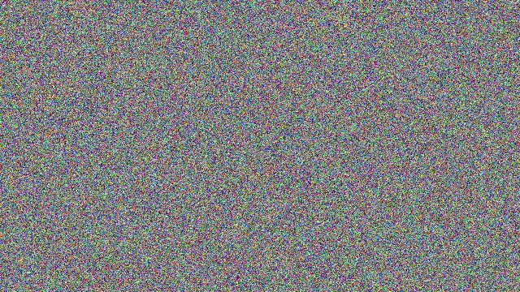
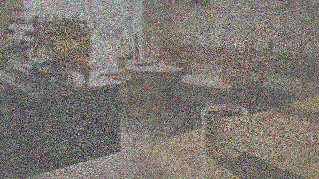
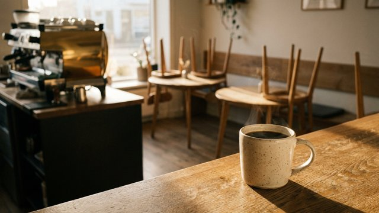
- Стартует с чистого шума и за 20–50 шагов убирает его по всей картинке сразу; промпт направляет каждый шаг.
- Другой seed = другой шум = другая картинка. Отсюда ручки студий: seed, guidance, steps, negative prompt.
Кто: Stable Diffusion / SDXL, FLUX, Midjourney, большинство моделей студий.
Авторегрессия: патч за патчем, как текст
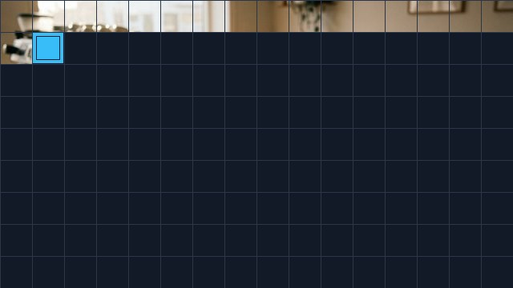
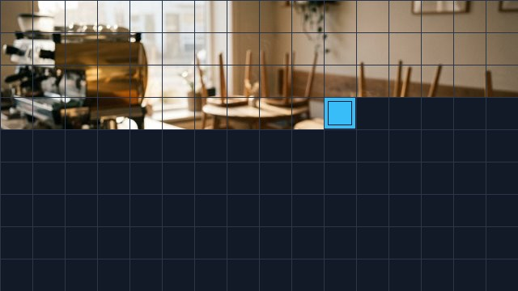
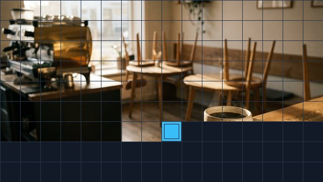
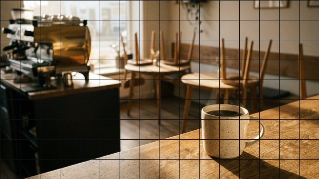
- Картинка = последовательность токенов-патчей; модель предсказывает следующий, как слово в тексте.
- Рисует та же мультимодальная LLM, что читает промпт → сильна в тексте, инструкциях и правках. Часто — гибрид.
Кто: GPT Image, Grok Aurora; Nano Banana — архитектура не раскрыта.
На практике: диффузия — ползунки и seed; чат-модели — промпт как ТЗ и правки словами. Техники урока работают для обоих.
GenAI Basics • Урок 04 • Генерация изображений06 / 27
Короткая теория без формул. Диффузия: стартуем с шума и за десятки шагов «проявляем» картинку целиком — поэтому seed и guidance так важны в студиях. Авторегрессия: картинка разбита на патчи-токены, модель пишет их по очереди, как текст, — поэтому чат-модели хорошо понимают инструкции и надписи. Честная оговорка: архитектуры GPT Image и Nano Banana раскрыты не полностью, многие современные модели — гибриды. Правая визуализация — схема (патчи 40×40 px), а не реальный порядок генерации конкретной модели.
Слой 1 • Базовые поставщики
Кто обучает базовые модели и дает API
С ними вы уже работали в L03 через SDK. Те же компании дают эндпоинты генерации изображений.
GOOGLE
Nano Banana 2 / Pro / 2 Lite
gemini-3.1-flash-image, gemini-3-pro-image, gemini-3.1-flash-lite-image.Сила: скорость, знания мира и поиск, мульти-референсы, тот же SDK, что в L03.
OPENAI
GPT Image 2 / 2.5
gpt-image-2, gpt-image-2.5-flare (быстрая), gpt-image-2.5-sunburst (точные правки).Сила: текст на картинке, строгое следование ТЗ, правки в диалоге.
BLACK FOREST LABS
FLUX.2 (Pro / Flex / Dev) → FLUX 3
API: BFL, Replicate, fal.ai. FLUX.2 Dev / Klein — открытые веса, до 10 референсов. FLUX 3 (07.2026) — мультимодальная.
Сила: фотореализм, цвета по hex, локальный запуск.
Сила: фотореализм, цвета по hex, локальный запуск.
STABILITY AI
Stable Diffusion 3.5 / SDXL
Основа опенсорс-экосистемы. Доступ через API и локальный запуск (L10).
Сила: тысячи пользовательских LoRA под любой стиль.
Сила: тысячи пользовательских LoRA под любой стиль.
MIDJOURNEY
Midjourney V8.2 + Edit Model
Только Web и Discord, публичного API нет. Edit Model (08.2026): правки, inpaint / outpaint, до 4 референсов.
Сила: эстетика и кинематографичный стиль.
Сила: эстетика и кинематографичный стиль.
КАК ВЫЗЫВАТЬ В КОДЕ
Прямой вызов API
POST /v1/images/generations или client.models.generate_content.Цена: ≈ $0.02–0.06 за кадр 1K у быстрых моделей; Pro и 4K дороже. Скорость: 3–15 с.
GenAI Basics • Урок 04 • Генерация изображений07 / 27
База та же, что в L03: те же ключи и заголовки авторизации. В Gemini API в response_modalities запрашиваем IMAGE. Актуальные линейки на октябрь 2026: у OpenAI — GPT Image 2 и 2.5 (варианты flare и sunburst), у Google — Nano Banana 2, Pro и 2 Lite, у BFL — FLUX.2 и новая FLUX 3. Midjourney V8.2 по-прежнему без официального REST API, поэтому в корпоративный пайплайн его не встроить; референсы там теперь через Edit Model.
Рынок • Октябрь 2026
Рынок генерации изображений: октябрь 2026
| Модель · вендор | Сильная сторона | Референсы | Доступ и цена |
|---|---|---|---|
| GPT Image 2 / 2.5OpenAI | Текст и инфографика, следование ТЗ, правки в диалоге; #1 Arena | до 16 (2.5; источники расходятся) | ChatGPT (вкл. Free); API ≈ $30 / 1M выходных image-токенов |
| Nano Banana 2 / Pro / 2 LiteGoogle | Скорость, знания мира и поиск, 4K, перевод текста на картинке | NB 2: до 14 объектов + 5 персонажей | Gemini app; API: 2 Lite ≈ $0.034 / кадр 1K |
| Grok Imagine Image 2.0xAI / SpaceXAI | Magic Wand-выделение, шаблоны (товар, портрет); #2 Arena | до 5 | Grok app; API ≈ $0.02–0.06 |
| Midjourney V8.2Midjourney | Эстетика и стиль: --sref, moodboards, персонализация | Edit Model: до 4 | $10–120 / мес.; API нет |
| FLUX.2 / FLUX 3Black Forest Labs | Открытые веса (Dev, Klein), 4 Мп, точные цвета по hex | до 10 | API BFL / fal / Replicate; локально (L10) |
| Kling IMAGE 3.0 / O1Kuaishou | Кинокадр, серии кадров, прямой мост в Kling-видео | до 10 | kling.ai (кредиты), API |
| Seedream 5.0ByteDance | 4K, поиск в Lite; Pro раскладывает кадр на PNG-слои | до 10 (Flash) | API, партнерские платформы |
| Ideogram 4.0Ideogram | Типографика; официальные JSON-промпты; открытые веса 9.3B | — | ideogram.ai; веса Apache 2.0 |
| Recraft V4Recraft | Нативный редактируемый SVG, бренд-стили | стиль-сеты | recraft.ai, API |
Arena, 08.2026: GPT-Image-2 — #1, Grok Imagine 2.0 — #2 (Text-to-Image и Image Edit). Лимиты и цены меняются ежемесячно — сверяйте перед занятием.
GenAI Basics • Урок 04 • Генерация изображений08 / 27
Это раздаточная карта рынка на октябрь 2026, не рейтинг «лучшей модели». Читаем по столбцам: за чем идти к каждой модели и сколько референсов она принимает. Акценты: GPT Image и Nano Banana — универсалы с текстом и правками в диалоге; Midjourney — эстетика без API; FLUX и Ideogram — открытые веса; Recraft — единственный с нативным SVG; Kling — если дальше нужно видео. Числа референсов зависят от поверхности (приложение vs API), у GPT Image 2.5 источники расходятся. Цены — ориентир, проверить перед занятием.
Слой 2 • Креативные студии и агрегаторы
Зачем нужна креативная студия вместо «голого» API?
Leonardo.ai, Kling, Krea, Sintx: холст, маски и пресеты поверх своих и чужих моделей.
Схема интерфейса креативной студии (обобщенно, не скриншот)
Модель
Phoenixсвоя модель студии
FLUX.2 Proчерез API BFL
GPT Image 2через API OpenAI
Nano Banana 2через API Google
SDXL + LoRAоткрытые веса
Кисть-маскаOutpaintСлои
Параметры
Guidance: 7.0
Steps: 30
Seed: 41872 🔒
Стиль: Editorial
Negative: text, logo
Inpaint: tall glass of iced latteСгенерировать
- Свои + чужие модели: Leonardo (Phoenix, Lucid) и Kling (IMAGE 3.0) — свои; рядом FLUX, GPT Image, Nano Banana, SDXL — одна подписка вместо пяти API-ключей.
- Холст: слои, маска кистью (inpainting), дорисовка границ кадра (outpainting).
- Пресеты и LoRA: стиль бренда или «фотосессия» в один клик.
- Ручки управления: guidance, seed, ControlNet по позе или контуру.
Определение: креативная студия — визуальная оболочка над моделями (своими и сторонними), которая превращает генерацию в рабочий процесс.
GenAI Basics • Урок 04 • Генерация изображений09 / 27
Слева — схема, а не скриншот реального продукта: так выглядит типичная креативная студия. Слева выбор модели (своя модель студии и сторонние через API), в центре холст с маской по кружке, справа ползунки диффузии. Важно: Leonardo и Kling — не «просто прокси», у них свои модели; Krea и Sintx в основном агрегируют чужие. Midjourney в такие агрегаторы официально не встроить — у него нет публичного API. Почему студии живут, если многие модели тренируют другие? Потому что большая часть работы дизайнера — не нажать кнопку, а собрать композицию, замаскировать лишнее и повторить стиль бренда.
Два подхода • Рабочий процесс
Холст и ползунки vs правка словами
Одна задача — заменить кружку на айс-латте — в двух парадигмах.
Схема: креативная студия (например, Leonardo)
➔
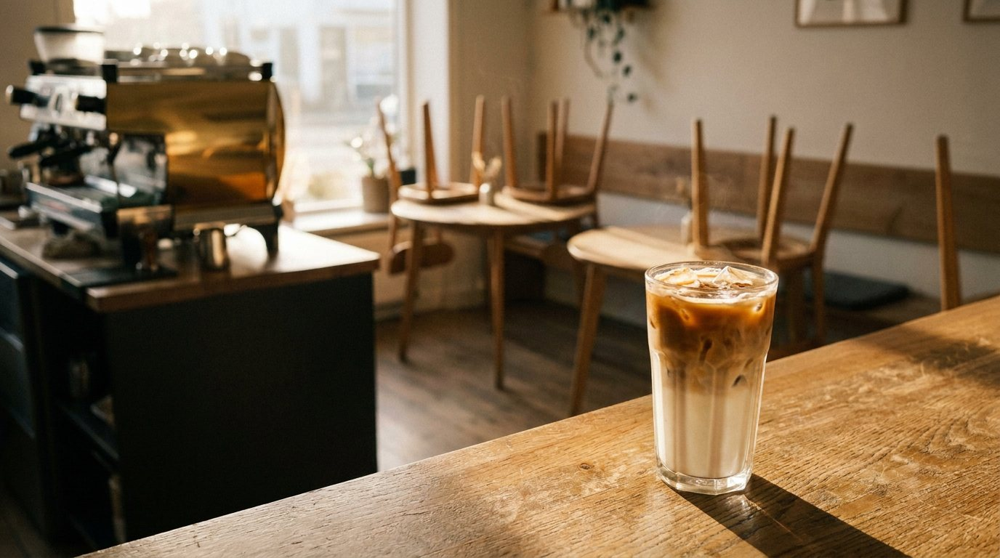
маска кистьюprompt для зоныnegative promptseed 41872 🔒
Креативная студия: графический редактор
Вы управляете процессом: обводите кружку маской (inpainting), пишете промпт для зоны, фиксируете seed и guidance. Контроль до пикселя — ценой ручной работы.
Схема диалога: ChatGPT / Gemini
ВыЗамени только кружку на высокий стакан айс-латте. Свет, стол и фон не меняй.
МодельГотово: кружка заменена, остальное без изменений.
Чат-модель: разговор с режиссером
Маска не нужна: модель сама находит объект по описанию (правка по инструкции). Быстро, но точность зависит от формулировки — и от вашей проверки результата.
GenAI Basics • Урок 04 • Генерация изображений10 / 27
Обе панели — схемы рабочего процесса, а не скриншоты продуктов; кадры A2 и B1 — наши реальные генерации из этого урока. Слева студия: рисуем маску по кружке, пишем промпт для зоны, держим seed. Справа чат: прикладываем кадр и пишем «замени только кружку» — модель сама сегментирует объект. Если нужен попиксельный контроль и ручная маска — студия. Если нужно быстро менять объекты смысловыми командами и работать с текстом — чат-модель.
Инженерный выбор • Сравнение инструментов
Матрица выбора: студия vs чат vs API
| Критерий | Креативная студия (Leonardo, Krea) | Мультимодальный чат (ChatGPT, Gemini) | API (Python SDK / Vertex / fal) |
|---|---|---|---|
| Порог входа | Средний (интерфейс, ползунки, слои) | Минимальный (естественный язык) | Высокий (код, ключи, пайплайны) |
| Точечные правки | Маска кистью / холст (inpainting) | Правка по инструкции (текстом) | Маска в запросе или правка по инструкции |
| Текст и кириллица | Зависит от выбранной модели | Отлично (GPT Image 2.x, Nano Banana) | Отлично (GPT Image 2.x, Nano Banana, FLUX.2) |
| Консистентность персонажа | Референс персонажа, фиксация seed | Мульти-референсы (Nano Banana 2: до 14 объектов + 5 персонажей) | Референсы в contents запроса |
| Пакетная генерация (500+ шт.) | Неудобно (клики, лимиты кредитов) | Невозможно (ручной чат) | Идеально: скрипт + БД. За кадр: Nano Banana 2 Lite ≈ $0.034 (1K), legacy Nano Banana ≈ $0.039, Grok ≈ $0.02–0.06 |
Инженерное правило: концепты и быстрые надписи ➔ чат. Коммерческий арт с ручной маской ➔ студия. Массовая генерация баннеров по каталогу ➔ API-скрипт.
GenAI Basics • Урок 04 • Генерация изображений11 / 27
Это раздаточная таблица. Студенты часто пытаются вручную генерировать 100 товаров в чате — это ошибка. В чате делаем прототип, в студии правим детали маской, а в продакшен уходит Python-скрипт со слайда 24. Цены за кадр — ориентир на октябрь 2026, у разных моделей они различаются в разы.
Часть 3 • Промпт-инжиниринг • Шаг 1
Шесть слов — и все решения принимает модель
Весь свободный промпт
a cozy coffee shop in the morning
Утро? За окном дождь. Людей, кота и камин никто не просил — модель заполнила пустоты по среднему из обучающего датасета.
GenAI Basics • Урок 04 • Генерация изображений12 / 27
Показываем картинку: получилось красиво. Спрашиваем аудиторию: это то, что вы хотели? Утро — а за окном дождь, люди, кот, камин. Модель не ошиблась — она заполнила пустоты. Отсюда переход к структуре.
Часть 3 • Промпт-инжиниринг • Анатомия слотов
Шесть слотов — что за что отвечает
Работающий промпт со слотами (copy & run)
высокий контроль сцены
Subject: a speckled cream ceramic mug of black coffee with steam, on worn oak counter in right third.
Setting: empty Scandinavian coffee shop at 7 a.m., chairs up on tables, brass espresso machine on left.
Camera: eye-level, 35mm lens, f/2.0, shallow depth of field.
Lighting: low warm morning sunlight from left window, long soft shadows.
Style: realistic editorial photography.
Constraints: no text, no logos.
Запреты зависят от модели
Gemini и GPT лучше слушают позитивные формулировки: «empty coffee shop» вместо «no people». Отрицания
--no / negative prompt — для Midjourney и SD / FLUX в студиях.Вместо «cozy, 4k, masterpiece» — физические детали: время, оптика, свет.
1 Subject — главный объект, фактура, место в кадре (right third).
2 Setting — время и контекст: «7 a.m., chairs up» убирает случайных людей.
3 Camera — 35mm (естественный умеренно широкий угол), f/2.0 — мягкое боке.
4 Lighting — низкий свет слева дает объем и длинные тени.
5 Style — editorial photo вместо глянцевого 3D-рендера.
6 Constraints — что исключить: текст, логотипы.
GenAI Basics • Урок 04 • Генерация изображений13 / 27
Читаем промпт по слотам и показываем на кадре, где сработал каждый: объект в правой трети, пустой зал с поднятыми стульями, 35 мм и f/2.0 дают естественный угол и мягкое размытие фона, свет слева. Три типичные ошибки новичка: эпитеты вместо деталей («cozy» — и модель рисует камин и кота), теги-пустышки «4k, masterpiece», забытые ограничения. Важный нюанс 2026 года: Google прямо советует для Gemini позитивные формулировки — «empty street» вместо «no cars»; отрицания через --no и negative prompt — инструмент Midjourney и SD/FLUX.
Часть 3 • Промпт • Шаг 3
Важные детали и надписи — отдельным блоком
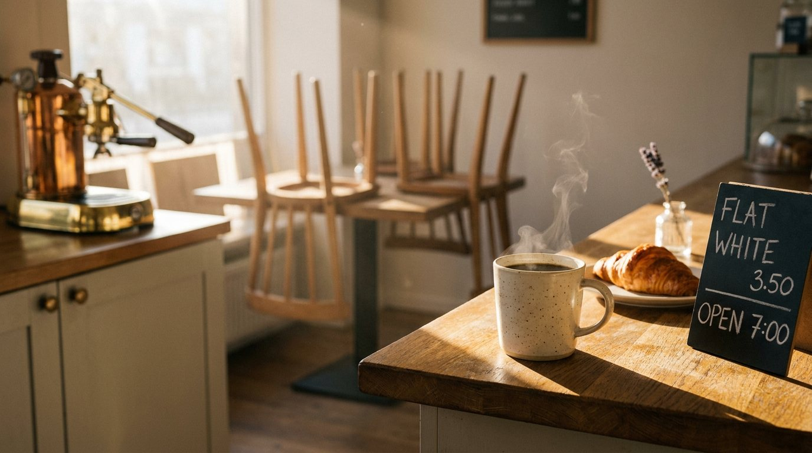
Кадр A3 — результат промпта справа. Проверяем по чек-листу, а не «на глаз».
Must-have:
• chalkboard sign with text exactly "FLAT WHITE 3.50" and "OPEN 7:00"
• one fresh croissant behind the mug
• small glass vase with lavender to the left of the mug
• no other text
Чек-лист приемки кадра A3
- ✅Текст «FLAT WHITE 3.50» и «OPEN 7:00» — без ошибок
- ✅Один круассан за кружкой
- ⚠️Лаванда есть, но справа, а не слева
- ❌Лишний текст: меню-доска сверху
Правила: текст — в кавычках и со словом
exactly; количество — числом; позицию — явно. Не прошло → точечная правка, не реролл.GenAI Basics • Урок 04 • Генерация изображений14 / 27
Сравниваем с предыдущим слайдом: сцена та же, добавились детали и текст. Честно разбираем результат по чек-листу: текст отрисован без ошибок — сильная сторона современных чат-моделей; круассан один и за кружкой; а вот лаванда оказалась справа, и на стене появилась меню-доска с лишним текстом. Это нормальная ситуация: must-have — это чек-лист приемки, и незакрытые пункты чиним точечной правкой (следующая часть урока), а не перегенерацией всего кадра.
Часть 3 • Словарь фотографа
Одна героиня — шесть слов камеры и света
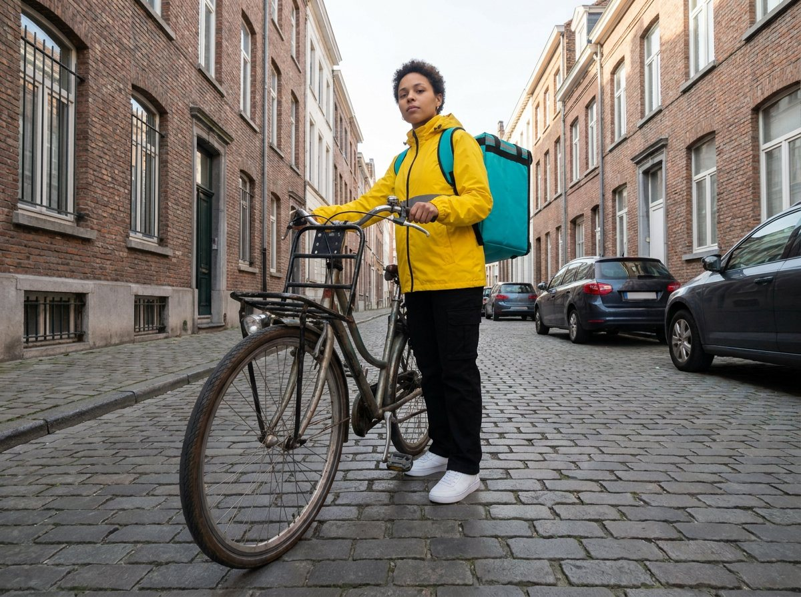
low angle снизу — «героично»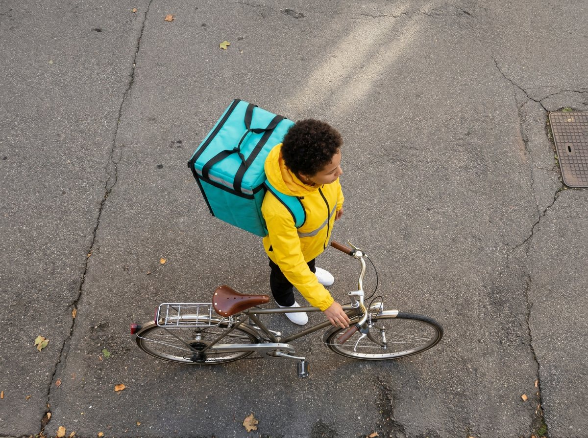
top-down сверху — схема, флэтлей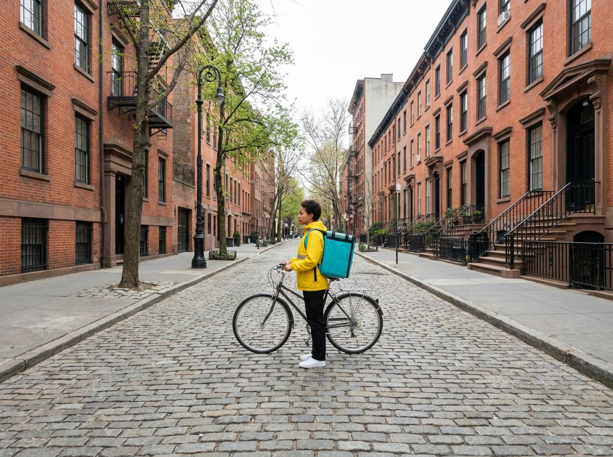
24mm wide герой + окружение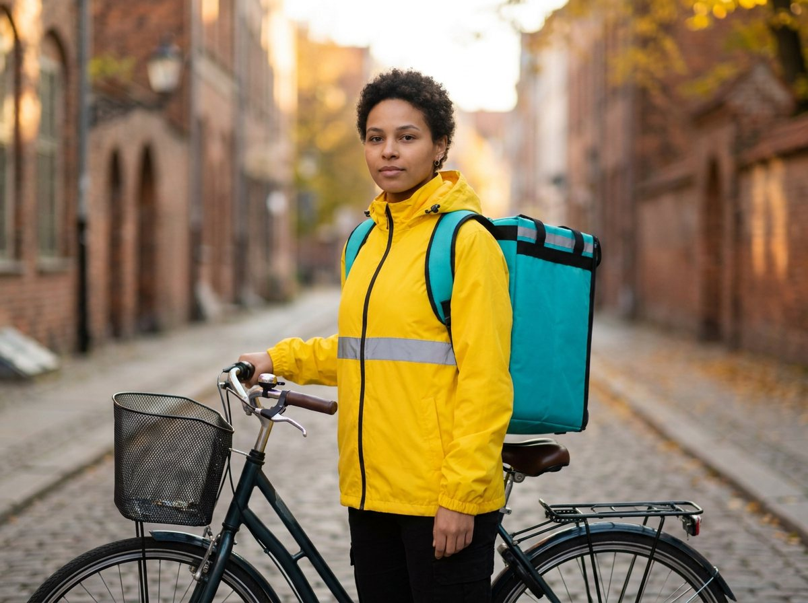
85mm f/1.8 портрет, размытый фон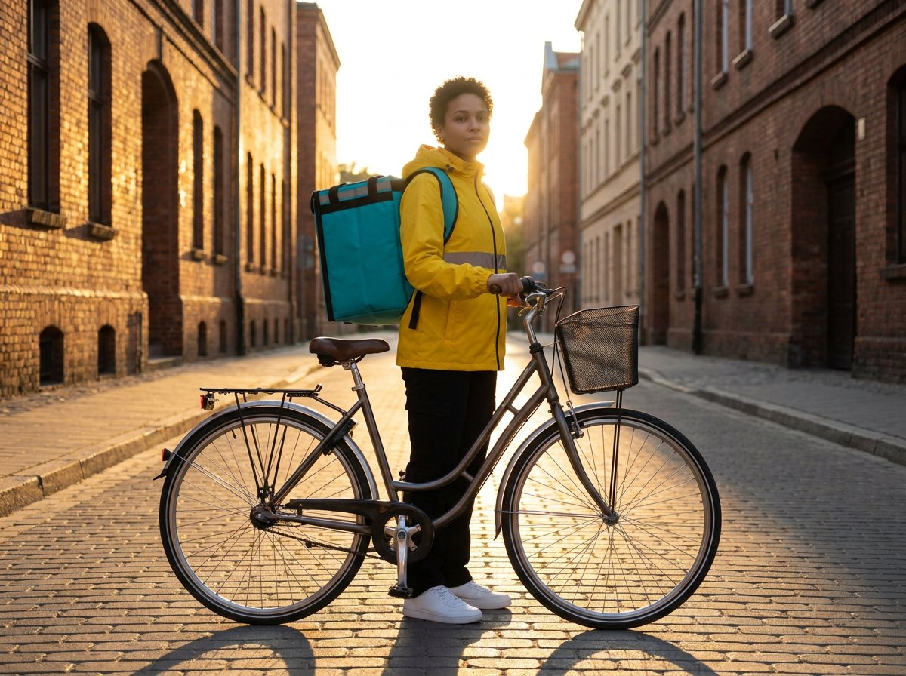
golden hour теплый контровой свет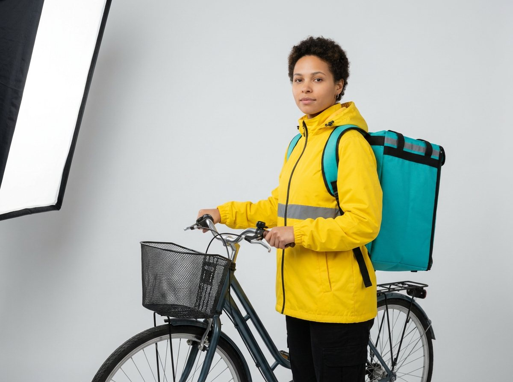
softbox studio ровный студийный светGenAI Basics • Урок 04 • Генерация изображений15 / 27
Это раздаточная шпаргалка. Разбираем 2–3 примера: 85 мм + f/1.8 = портрет с размытым фоном; top-down = флэтлей для товаров; golden hour = теплый мягкий свет. Формат кадра задаем параметром (--ar в Midjourney, выбор формата в ChatGPT и Gemini), а не словами.
Экватор занятия
Перерыв 5 минут
05:00
Во второй части: точечные правки по инструкции, консистентный персонаж-курьер и фотосессия товара.
GenAI Basics • Урок 04 • Генерация изображений16 / 27
Включаем таймер. Никаких заданий в чат — только отдых и перезагрузка внимания.
Часть 4 • Методология контроля
Правим по кругу, а не перегенерируем
Шаблон инженерной правки
Отредактируй фото. Замени только объект X на Y.
Сохрани: ракурс, свет, фон, фактуру и тени.
Не меняй: геометрию окружения.
- Одна правка за шаг (как один атомарный коммит в git).
- Явно называйте то, что сохранить — модель защищает эти зоны.
- После ~5–8 правок дрейф заметен — открываем новый чат с лучшим кадром.
GenAI Basics • Урок 04 • Генерация изображений17 / 27
Ключевой навык. Новички жмут кнопку «перегенерировать» 20 раз и удивляются, почему меняется всё. Правильный подход — зафиксировать черновик и вносить атомарные правки. Следующий слайд демонстрирует результат.
Часть 4 • Паттерн 1 • Правка по инструкции
Одна сцена — три направленные правки
Оригинал A2: утренняя кофейня, кружка
Объект (B1): кружка ➔ айс-латте
Свет (B2): дождливый вечер за окном
Стиль (E2): плоская векторная графика
ФормулаКадр A2 + одна правка за шаг
«Замени только X на Y. Сохрани: ракурс, свет, фон, геометрию».
Промпт B1: замена объекта
Edit this photo. Replace only the ceramic mug with a tall glass of iced latte with visible coffee and milk layers and ice cubes. Keep everything else exactly the same: camera angle, counter, espresso machine, background, light direction and shadows.
Промпт B2: смена света и погоды
Edit this photo. Change only the time of day to a rainy evening: dark dusk outside window, raindrops on glass, warm interior pendant lamps switched on. Keep exact same composition, objects, mug and camera angle.
ChatGPT / Gemini / Kling: правка по инструкции — маска не нужна, модель сама находит кружку.
Leonardo: inpainting — маска кистью по кружке + промпт для этой зоны.
Leonardo: inpainting — маска кистью по кружке + промпт для этой зоны.
GenAI Basics • Урок 04 • Генерация изображений18 / 27
Обратите внимание: при замене кружки стулья, кофемашина и свет почти не изменились — это и есть контроль. Терминология: в чат-моделях это «правка по инструкции» (edit by instruction) — мы описываем изменение словами, маску модель строит сама. Inpainting в строгом смысле — это когда мы сами рисуем маску кистью, как в Leonardo. Где применяется: варианты товара для магазина, смена сезона в баннере, адаптация под стиль бренда.
Часть 4 • Паттерн 2 • Консистентность персонажа
Мастер-лист курьера: формула генерации ракурсов
Наивный запрос в каждой сцене рисует нового человека. Инженерный подход: сначала 4 ракурса на сером фоне и физические якоря.
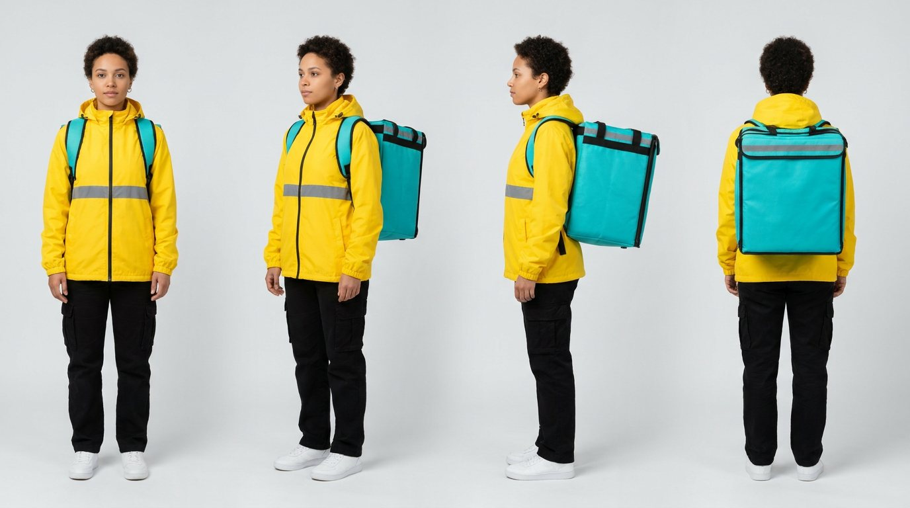
Лист персонажа (character sheet): 4 ракурса, нейтральная поза, студийный свет
5 неизменных якорей: short curly hair • small silver hoop earring • bright yellow jacket with grey stripe • turquoise backpack • white sneakers
Наивно«курьер едет на велосипеде под дождем»
В каждой сцене — новое лицо, возраст и куртка. Консистентности нет.
ИнженерноЛист персонажа: 4 ракурса на сером фоне
Студийный свет, полный рост: анфас, 3/4, профиль, со спины. Мастер-референс для всех сцен.
Промпт мастер-листа (C1)
Character reference sheet on a plain light grey background: the same young woman food delivery courier shown four times in a row - front view, three-quarter view, side profile, back view - full body, standing neutral pose.
Fixed appearance: about 28 years old, short curly dark-brown hair, light-brown skin, small silver hoop earring in left ear, bright yellow waterproof jacket with reflective grey stripe across chest, black cargo trousers, white sneakers, square turquoise thermal backpack. Studio photography, clean even lighting. No brand names, no logos, no text.
Куда вставлять: Gemini, ChatGPT, Leonardo, Kling. В Midjourney — через Edit Model (до 4 референсов; в 08.2026 заменил
--cref / --oref). Сохраняем как эталон C1_sheet.png.GenAI Basics • Урок 04 • Генерация изображений19 / 27
Рецепт консистентности: 1) сгенерировать лист персонажа на нейтральном фоне в 4 ракурсах; 2) зафиксировать 5 контрастных якорей. Этот лист прикладывается как референс ко всем последующим генерациям и видео. Для тех, кто учился по старым курсам Midjourney: параметров --cref и --oref в V8 больше нет — с августа 2026 референсы подаются через Edit Model, до 4 изображений.
Часть 4 • Паттерн 2B • Реальный человек как референс
Любой человек как референс: от 2–3 фото к мастер-листу
Вход 1 • Референсы
2–3 реальных фото лица
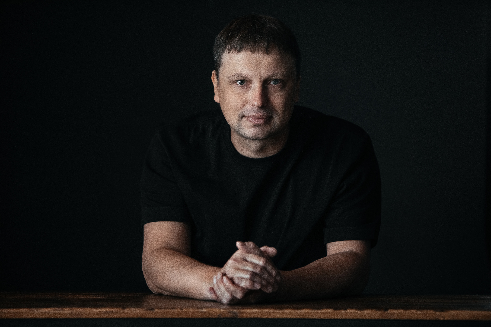
Анфас, студия
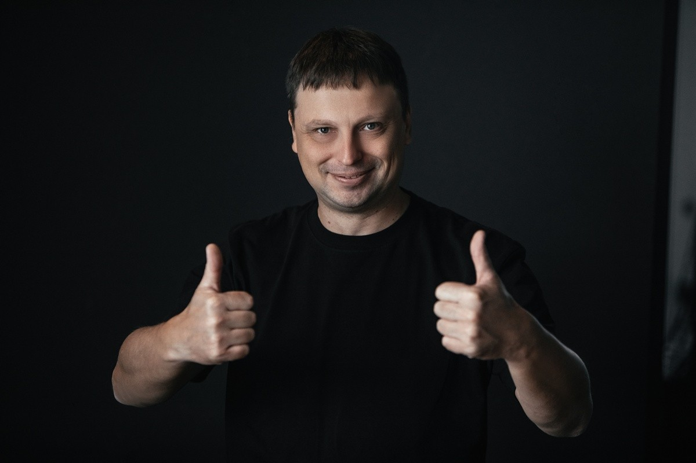
Эмоция, свет
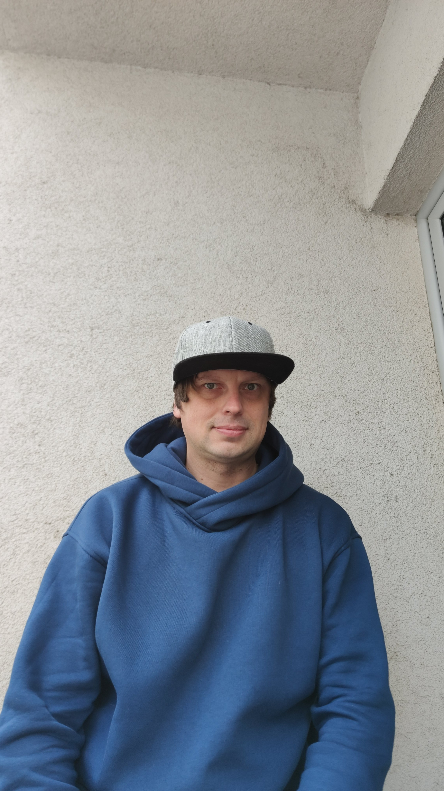
Дневной свет
Вход 2 • Промпт (Gemini / ChatGPT / Leonardo)
удерживает лицо
Create a photorealistic character reference sheet based on the attached photos of Ihar Rubanovich. Same adult man, not a generic model.
Preserve facial identity: face shape, eyes, nose, lips, jawline, hairline, skin tone. Do not beautify, rejuvenate or stylize his face.
Four angles: front, three-quarter, side profile, back. Full body, neutral pose.
Outfit: yellow courier jacket with grey stripe, black cargo trousers, white sneakers, turquoise thermal backpack. Light grey studio background. No text, no logos.
Что отправляем: фото + промпт в чат; в коде — файлы в
contents. Только свои фото или с согласия человека.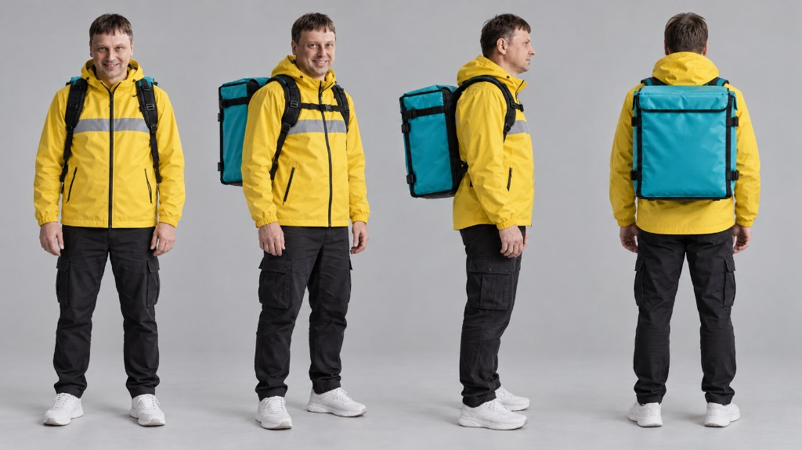
Результат: лицо узнаваемо во всех 4 ракурсах. Сверяйте глазами: мелкие черты могут плыть.
Анти-паттерн
Без
do not beautify модель сгладит кожу и «улучшит» лицо до стокового.Мост к продакшену
Лист прикладываем как референс персонажа к сценам и к Kling / Veo для видео.
GenAI Basics • Урок 04 • Генерация изображений20 / 27
Показываем реальный кейс на себе. Как превратить себя или актера в управляемого героя: отправляем 2–3 реальных фото, запрещаем «улучшайзинг» и фиксируем 4 ракурса с костюмом курьера. Честно про результат: лицо узнаваемо, но это не гарантия — мелкие черты могут плыть, поэтому результат всегда сверяем глазами. Этический момент: работаем только со своими фото или с явного согласия человека. Этот лист дальше анимируется в Kling и Veo.
Часть 4 • Паттерн 2 • Сцены, форматы и мост к видео
Курьер в сценах и первый кадр для видео (Kling / Veo)
Сцена 1 (16:9): на велосипеде под дождем ➔ база для видео
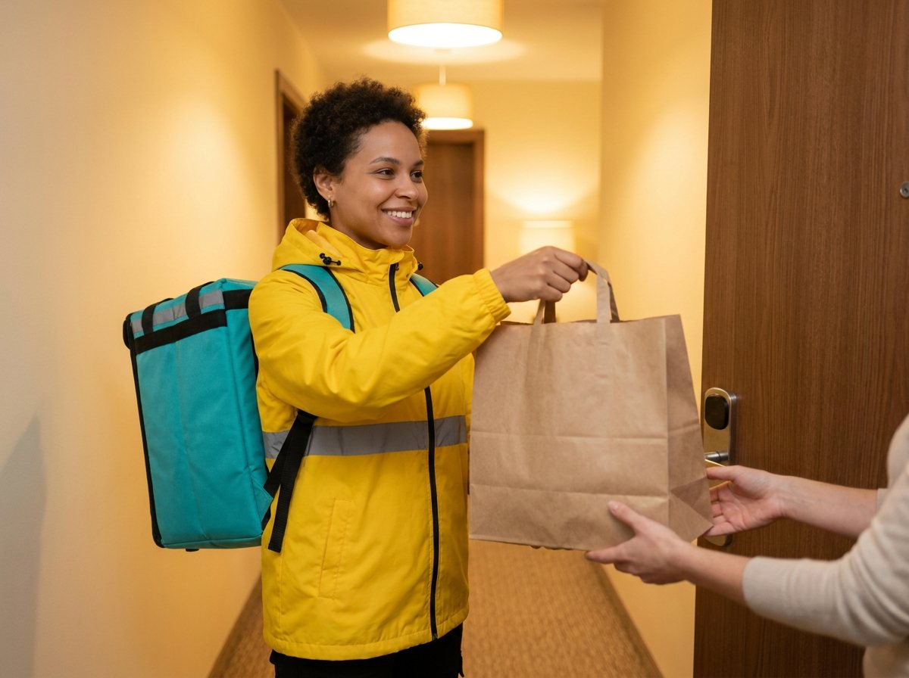
Сцена 2: передача заказа у двери (35mm)
Сцена 3: перерыв на лавочке в парке (85mm)
Промпт переноса в сцену (scene transfer)
Use attached character sheet (C1) as identity reference:
The same courier (same face, curly hair, silver hoop earring, yellow jacket with grey stripe, turquoise backpack) is riding a city bicycle through a rainy evening street with wet cobblestones reflecting shop lights. Medium shot, 50mm lens, motion blur in background. Realistic photography. No logos, no text.
Форматы: 16:9 — YouTube и горизонтальное видео, 9:16 — Reels / Shorts (селектор формата).
Мост к видеоКонвейер в Kling 3.0 / Veo 3.1
1. Экспорт кадра:
2. Image-to-Video: загружаем в слот First Frame.
3. Промпт движения:
4. Результат: лицо и одежда заметно стабильнее, чем при генерации с нуля; кадры все равно проверяем на дрейф.
C2_rain.png (16:9) — первый кадр (t₀).2. Image-to-Video: загружаем в слот First Frame.
3. Промпт движения:
"courier starts pedaling, wheels splash puddles, camera tracks along".4. Результат: лицо и одежда заметно стабильнее, чем при генерации с нуля; кадры все равно проверяем на дрейф.
В тулах: Gemini / ChatGPT (референс в чате) • Leonardo (референс персонажа + seed) • Midjourney (Edit Model) • Kling / Veo (First Frame).
GenAI Basics • Урок 04 • Генерация изображений21 / 27
Показываем, как мастер-лист переносится в сюжетные сцены: прикладываем C1 и повторяем текстовые якоря. Главный мост к Уроку 05: статичный кадр C2 становится первым кадром (t₀) для Kling и Veo — курьер поедет на велосипеде, и внешность держится заметно лучше, чем при генерации видео с нуля. Но не идеально: кадры видео все равно проверяем на дрейф лица и одежды.
Часть 4 • Паттерн 3 • E-commerce
Один пэкшот — четыре коммерческих кадра
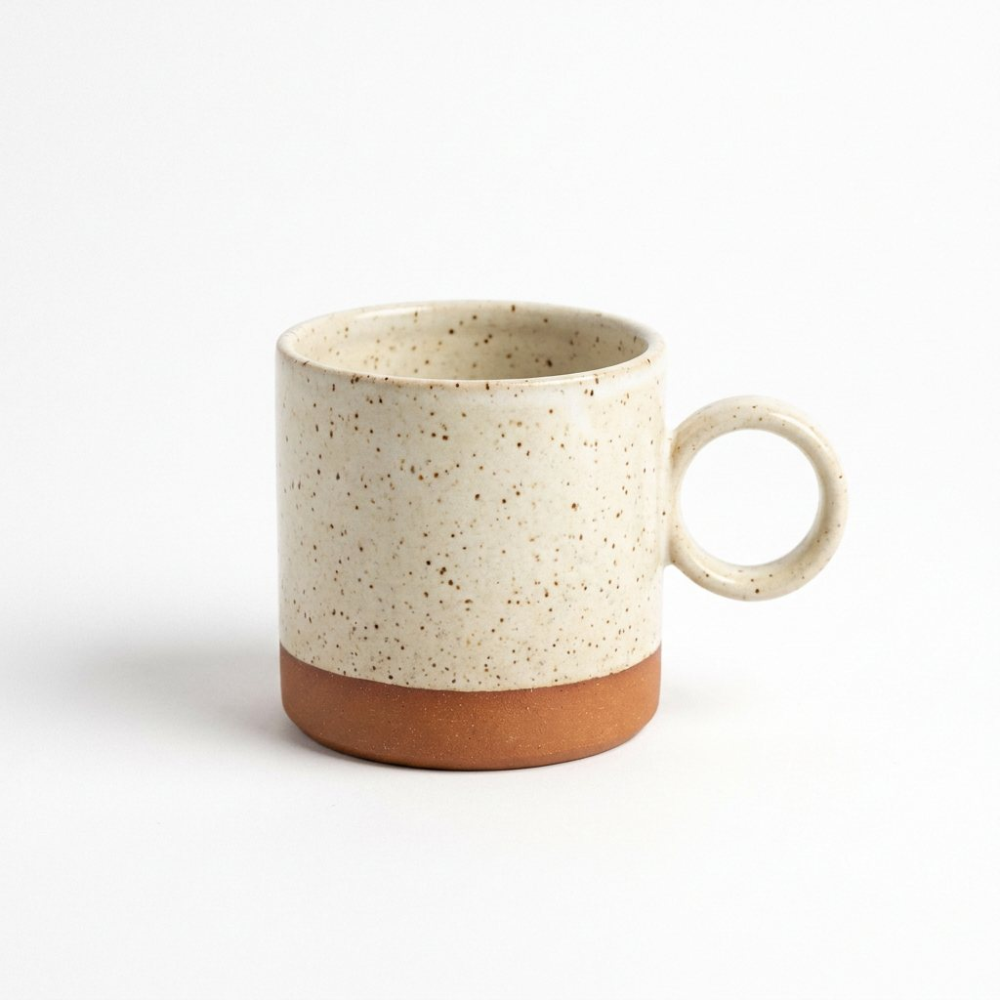
Мастер-пэкшот (D0): товар на белом фоне
1. Промпт мастер-пэкшота (D0)
Studio e-commerce packshot of a single handmade ceramic mug: cylindrical body, speckled cream glaze with small brown dots, unglazed terracotta-brown band at base, round C-shaped handle on right. Centered, 3/4 view, pure white background, soft even light. No text, no logo.
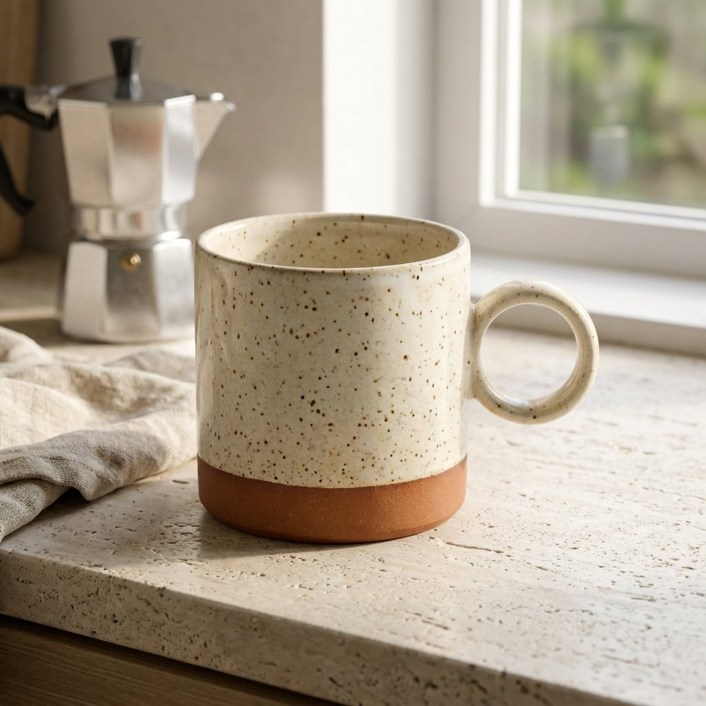
Лайфстайл (D1): кухня, утро
Флэтлей (D2): вид сверху
В руках (D3): масштаб товара
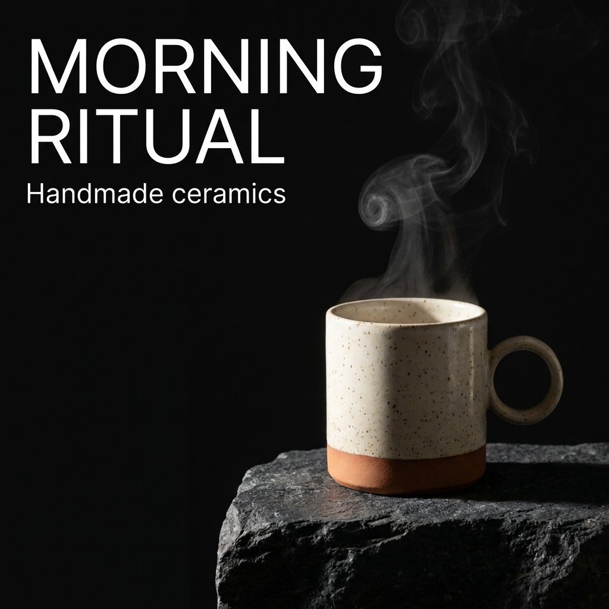
Баннер (D4): промо-постер 1:1
2. Промпт каталожной сцены (с референсом D0)
Product photo session. Place exactly this mug (same shape, speckled cream glaze, terracotta base band, handle on right) on light travertine kitchen counter next to morning window. Soft light, 50mm f/2.8. Do not change mug shape, clay glaze, or proportions.
Инженерный контроль: референс
D0 + запрет менять форму держат кружку заметно стабильнее; финальная приемка — за человеком.GenAI Basics • Урок 04 • Генерация изображений22 / 27
Самый востребованный бизнес-сценарий: маркетплейсы, интернет-магазины, соцсети. Реальный товар фотографируют один раз на нейтральном фоне, а модель делает предметную съемку без аренды студии. Честно: форма и глазурь держатся хорошо, но не идеально — мелкий рисунок крапинок и пропорции ручки могут гулять, поэтому каждый кадр проходит ручную приемку (желтая зона из блока о рисках).
Часть 4 • Паттерн 4 • Композиция
Назовите роль каждой картинки
Картинка 1 — персонаж (курьер)
Картинка 2 — товар (кружка)
➔
Итог: курьер пьет из той самой кружки в утренней кофейне
Правило ролейНе писать «объедини их» (будет каша). Назначить роли:
Image 1 = identity reference (герой), Image 2 = product reference (товар).
Промпт композиции (Nano Banana / ChatGPT)
Image 1 is the courier character, Image 2 is the exact ceramic mug.
The courier from Image 1, in her yellow jacket with grey stripe, sits at a coffee shop window counter on her break and drinks from exactly the mug from Image 2 (same speckled cream glaze and terracotta base). Turquoise backpack on floor next to stool. Morning light, 35mm lens, realistic photography. No logos, no text.
GenAI Basics • Урок 04 • Генерация изображений23 / 27
Типичная ошибка новичка — приложить 3 картинки и написать «сделай красиво». Модель смешает их в кашу. Надежный способ — явно распределить роли: Картинка 1 — герой, Картинка 2 — товар, Картинка 3 — свет. Лимиты на число референсов разные: в Nano Banana 2 — до 14 объектов и 5 персонажей, в Midjourney Edit Model — до 4 (таблица рынка).
Часть 5 • То же в коде
Серия картинок скриптом — тот же SDK, что в L03
import csv from google import genai from google.genai import types from PIL import Image client = genai.Client() ref = Image.open("packshot.png") for row in csv.DictReader(open("catalog.csv")): # ~50 товаров resp = client.models.generate_content( model="gemini-3.1-flash-image", contents=[ref, PROMPT_SPEC.format(**row)], config=types.GenerateContentConfig( response_modalities=["IMAGE"], image_config=types.ImageConfig(aspect_ratio="16:9"))) for part in resp.parts: # ответ = список частей if part.inline_data: # берем только картинку part.as_image().save(f"{row['sku']}.png")
~50 карточек за ~10 минут и ~$2–3
Вместо дня ручной работы в браузере: CSV с товарами → цикл генерации. Порядка 10 с и $0.04–0.06 на кадр.
Не берите
parts[0] вслепую: в ответе могут быть и текстовые части. Ищем часть с inline_data.10/90 в коде: вызов модели — 5 строк. Остальное — чтение каталога, шаблон промпта, ретраи и автопроверка на артефакты.
GenAI Basics • Урок 04 • Генерация изображений24 / 27
Связываем с практикой инженера. Тот же официальный google-genai SDK, что в L03. В contents передаем изображение-референс и текст, собранный из шаблона по строке каталога. Важная деталь: ответ — это список частей (parts), где может быть и текст, и картинка, поэтому идем циклом и берем часть с inline_data. Реалистичная оценка: около 50 карточек за 10 минут и 2–3 доллара — без учета ретраев и ручной приемки.
Часть 5 • Риски • Blast Radius
Где генерация подводит и где ее нельзя применять
- Анатомия и мелкий текст: пальцы в толпе и длинные абзацы все еще дают сбои.
- Дрейф деталей: после ~5–8 правок подряд дрейф лица и логотипов заметен.
- Авторское право: в США чисто сгенерированное изображение не защищено (дело Thaler: 02.03.2026 Верховный суд отказался его рассматривать). Иск Disney / Universal v. Midjourney продолжается.
- Происхождение: SynthID — невидимый водяной знак в пикселях (Google; у OpenAI с 05.2026) + C2PA — подписанные метаданные, которые теряются при скриншоте.
GenAI Basics • Урок 04 • Генерация изображений25 / 27
Напоминаем матрицу Blast Radius из L01. Красная зона — табу для генерации. Желтая — только с человеком в контуре. Зеленая — свобода для внутренних задач. По фактам 2026 года: в США Верховный суд 2 марта 2026 отказался рассматривать дело Thaler — чисто ИИ-изображение без авторского вклада человека не защищается копирайтом; иск Disney и Universal против Midjourney идет. На глаз фотореализм уже не отличить, но SynthID отличит: его ставят Google и, с мая 2026, OpenAI; C2PA — метаданные, они слетают при скриншоте.
Практика • Домашнее задание №4
Фотосессия товара или персонаж-курьер
Трек А: фотосессия предмета
Свой предмет на белом фоне ➔ 4 коммерческих кадра (лайфстайл, флэтлей, в руках, баннер).
Трек Б: курьер доставки (Glovo)
Лист персонажа ➔ 3 сцены с якорными приметами ➔ 1 правка по инструкции.
СТРУКТУРА СДАЧИ В GITHUB
genai-homeworks/
└── L04/
├── images/ (01_free.png, 02_structured.png...)
├── prompts.md (промпты, сервис, дата)
└── qa.md (что сохранилось, что уплыло)
└── L04/
├── images/ (01_free.png, 02_structured.png...)
├── prompts.md (промпты, сервис, дата)
└── qa.md (что сохранилось, что уплыло)
Обязательно: сравнить один промпт в двух сервисах (например, Leonardo vs ChatGPT) и описать разницу в
qa.md. Инвайт: ihar_rubanovich@epam.com.GenAI Basics • Урок 04 • Генерация изображений26 / 27
Студенты выбирают один из двух треков. Трек А ближе тем, кто занимается e-commerce. Трек Б продолжает наш сквозной кейс курьера из L01. Главный критерий оценки — не идеальная красота, а осознанность: виден ли переход от свободного промпта к структуре и честно ли зафиксирован дрейф в qa.md.
Итоги • Мост к видео
Четыре правила инженера визуального AI
1. Инструмент — под задачу
Чат для идей и надписей, студия для холста и масок, API для конвейера в коде.
2. Структура вместо фразы
6 слотов (объект, сцена, камера, свет, стиль, запреты) + блок must-have.
3. Хирургическая правка вместо реролла
Атомарная команда «измени только X, сохрани Y» побеждает генерацию заново.
4. Консистентность через якоря
Мастер-референс + 4–6 ярких словесных примет удерживают героя в любой сцене.
Урок 05: Генерация видео
Кадры с курьером станут первыми кадрами для видеомоделей (Kling, Veo, Runway). Наш курьер поедет на велосипеде!
GenAI Basics • Урок 04 • Генерация изображений27 / 27
Подводим итоги, благодарим за внимание и открываем микрофон для Q&A. Делаем интригующий тизер Урока 05: мы возьмем эти же картинки и превратим их в 5-секундные видеоролики с физикой движения.